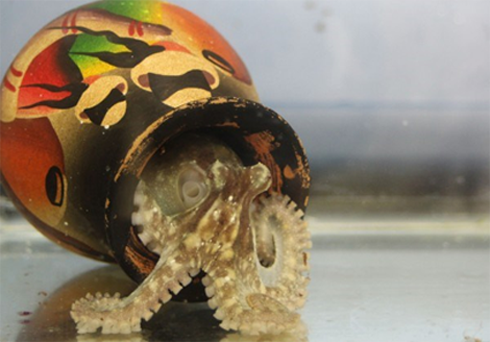

Dark Secrets From The Wealthiest Family In World
Read More
Read More
BLOG
Not to send you into a meltdown or anything but octopuses are basically ‘aliens’ – according to scientists.
Researchers have found a new map of the octopus genetic code that is so strange that it could be actually be an “alien”.
The first whole cephalopod genome sequence shows a striking level of complexity with 33,000 protein-coding genes identified – more than in a human.
“The late British zoologist Martin Wells said the octopus is an alien. In this sense, then, our paper describes the first sequenced genome from an alien.”
The scientists sequenced the genome of the California two-spot octopus in a study published in the journal Nature.
They discovered unique genetic traits that are likely to have played a key role in the evolution of characteristics such as the complex nervous system and adaptive camouflage.
Analysis of 12 different tissues revealed hundreds of octopus-specific genes found in no other animal, many of them highly active in structures such as the brain, skin and suckers.
The scientists estimate that the two-spot octopus genome contains 2.7 billion base pairs – the chemical units of DNA – with long stretches of repeated sequences.
And although the genome is slightly smaller than a human’s, it is packed with more genes.
Reshuffling was a key characteristic of the creature’s genetic make-up. In most species, cohorts of certain genes tend to be close together on the double-helix DNA molecule.
A gene is a region of DNA that contains the coded instructions for making a protein.
In the octopus, however, there are no such groupings of genes with related functions. For instance, Hox genes – which control body plan development – cluster together in almost all animals but are scattered throughout the octopus genome.
It was as if the octopus genome had been “put into a blender and mixed”, said co-author Caroline Albertin, also from the University of Chicago.